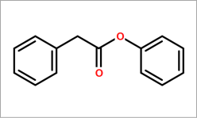

名 称:
苯乙酸
C A S:
722-01-0
分子式:
C14H12O2
外观与性状：固体
熔点：40-42oC(lit.)
沸点：158°C7 mm Hg(lit.)
闪点：>230 °F
密度：1.13g/cm3
折射率：1.575
生产方法：
3. 制法:于装有搅拌器、回流冷凝器的反应瓶中,加入苯乙腈...
1. 由苯乙腈水解而得。将52.6kg70%的硫酸加入反应锅,搅拌加热至100℃左右,缓缓滴加苯乙腈,在1h内滴完40kg后升温至130℃,继续保温反应2h。然后加入8kg水,稀释反应生成的硫酸氢胺,静置分层,分去硫酸氢铵母液,在120-130℃减压脱水1h,得纯度96-97%的苯乙酸,收率95-97%。苯乙腈的水解反应也可以在氢氧化钠溶液中进行,在100-104℃回流6h,至油状液体减少为止,冷至5℃,加盐酸调节pH至1-2,甩滤,滤饼用水洗涤,在40℃干燥,得苯乙酸。
2. 烟草:FC,59;OR,44;OR,43;FC,9, 18, 40;BU,9, 18, 26, 56;OR,1, 18;合成:由苄基氰用稀硫酸或氢氧化钠水解制得,也可由氢碘酸和红磷还原桃腈制得。
3. 制法:于装有搅拌器、回流冷凝器的反应瓶中,加入苯乙腈...
用途：
1. 苯乙酸是医药、农药、香料等有机合成的中间体。
2. 用于青霉素生产过程中提高青霉素G的总产量,并用作配制香料的原料。也可用于烘烤食品、肉制品、甜沙司酱。
3. 可用于烟用香精中,特别是在哈瓦那雪茄香型中。
急救措施
必要的急救措施描述
如果吸入,请将患者移到新鲜空气处。 如果停止了呼吸,给于人工呼吸。
在皮肤接触的情况下,用肥皂和大量的水冲洗。
在眼睛接触的情况下,用水冲洗眼睛作为预防措施。
如果误服,切勿给失去知觉者从嘴里喂食任何东西。用水漱口。
最重要的症状和影响，急性的和滞后的
及时的医疗处理和所需的特殊处理的说明和指示
消防措施
灭火方法及灭火剂
用水雾,耐醇泡沫,干粉或二氧化碳灭火。
源于此物质或混合物的特别的危害
碳氧化物
救火人员的预防
如必要的话,戴自给式呼吸器去救火。
泄漏处理办法
人员的预防,防护设备和紧急处理程序
防止粉尘的生成。 防止吸入蒸汽、气雾或气体。
环境预防措施
不要让产物进入下水道。
抑制和清除溢出物的方法和材料
扫掉和铲掉。存放在合适的封闭的处理容器内。
储运特性
安全操作的注意事项
在有粉尘生成的地方,提供合适的排风设备。一般性的防火保护措施。
安全储存的条件,包括任何不兼容性
贮存在阴凉处。 容器保持紧闭，储存在干燥通风处。